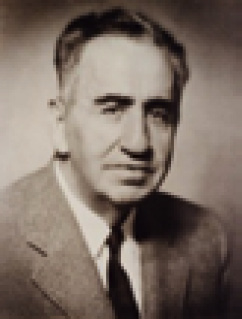

U
ucu açık soru (open-ended question) Yanıtı önceden belirlenmemiş olan; kişisel düşünce ve görüşlerin açıklanmasına olanak sağlayan; ancak kimi durumlarda açıklamanın uzunluğuna sınır konulan soru türü; açık uçlu soru.
uçak fobisi Bkz. uçak korkusu.
uçak korkusu (aeroacrophobia) Uçağa binmekten, uçak yolculuğu yapmaktan panik derecesinde korkma; uçak fobisi.
uç düğme (terminal buton) Sinir hücrelerinde, aksonun uç bölümünde bulunan ve sinir iletici maddeler taşıyan şişkin, düğme biçimindeki yapılar. Bkz. sinir sistemi.
uç organ (end organ) Deri, kas, doku, mukoza zarı ve benzeri çevresel dokulardaki sinir ucunu oluşturan özel yapı.
UFO (Unidentified Flying Object) Tanımlanmamış uçan nesneler. Jung’a göre, yaşayan bir mit; bilinçdışı ilk örneğin bir ürünü; içgüdüye dayanan ve basit, yuvarlak biçimi benliğin ilk örneğini temsil eden ve bu nedenle çağımızdaki ruhsal bölünmüşlüğü ödünlemeye en uygun istemsiz yansıtmalar.” Bkz. mandala.
ufuk (horizon) 1. Algı psikolojisinde algılanabilirlik aralığı. 2. Kolaylıkla fark edilebilir bir ölçütle ya da özellikle belirlenen bir bölgesel kültürel dönem ya da kültürel gelişim düzeyi.
uğraş sağaltımı Bkz. uğraş tedavisi.
uğraş tedavisi (occupational therapy) Bedensel ya da ruhsal bozukluğu olanların, ilgi ve yeteneklerine uygun işlerde çalışmaya yöneltilerek iyileştirilmelerini amaçlayan tedavi biçimi; meşguliyet terapisi; uğraşı sağaltımı.
uğraş uyumsuzluğu (vocational maladjustment) Kişinin seçmiş olduğu uğraşının gerektirdiği yetenekleri çok az ya da aşırı ölçüde taşımasından ötürü, işi ya da benliği ile uyum sağlayamaması.
ulam Bkz. kategori.
ulaşılabilir örneklem (available sampling) Ulaşılabilir ve araştırmaya katılmaya gönüllü deneklere dayalı bir örneklem. Örneğin, maliyetin düşük ve kolaylıkla ulaşılabilir olması nedeniyle birçok psikoloji deneyi için yerleşkedeki öğrenciler kullanılıyor.
ultrason (ultrasonography) İnsan kulağının işitemeyeceği kadar yüksek frekanslarla vücut dokularına ses dalgaları uygulayarak, geri dönen sesin bir monitör aracılığıyla görüntüye dönüştürüldüğü bir tür muayene tanı tekniği. Sesi, farklı yoğunluktaki dokular, farklı oranlarda geri yansıtıyor. Bu teknik
uluma (aboiement) Kişinin istemsiz ve denetimsiz olarak havlama gibi çeşitli hayvan sesleri çıkardığı bir konuşma bozukluğu. Bu bozukluk, süreğen ileri şizofreninin ve Tourette sendromunun bir belirtisidir.
ulus (nation) İmparatorlukların çözülmesiyle ortaya çıkan ve aralarında dil, din ve kültür bağı bulunan, ortak bir ülkü çevresinde birleşmiş, aynı yazgıyı paylaşan ve bağımsız bir siyasal kimlikle aynı topraklar üzerinde yaşayan insan topluluğu; millet.
ulusçuluk (nationalism) Ulusunu sevmek, onun geçmişine bağlılık göstermek, geleceği ve yükselmesi yolunda çalışmak temeline dayanan ve bir ulusun ancak kendine ve kendi değerlerine dayanarak yaşayabileceğine inanan görüş.
ulusal dil (national language) Bir devletin bayrağı altında yaşayan bir ulusun yasayla belirlenen ortak dili. Örneğin, Türkiye Cumhuriyeti’nin ulusal dili Türkçedir.
ulusal eğitim (national education) 1. “Üzerinde yaşanan toprağa bağlı, ortak bir dili ve kültürü olan halk topluluğu” demek olan bir ulusta ulusal duygu ve ulusal bilinç yaratmayı amaçlayan eğitim; milli terbiye. Ulusal eğitim bu amacını halkın dilini, yaşamakta olan geleneklerini, sanatını, şarkılarını, yazınını, tarihini yeni kuşaklara aktarma, kendi değerlerini belirtme, bunları canlı tutma ve geliştirme ile gerçekleştiriyor. Bunun için, tüm ülkede yaygın olan değerler, aileden başlanarak adım adım ülkedeki herkese mal ediliyor. Ulusal eğitimin temel taşı, ulusun değerlerini benimseme ve kendini o değerlere adamadır. 2. Bir ülkenin özgün eğitim kurumlarının tümü; ülkenin eğitim düzeni.
uluslararası eğitim (international education) 1. Uluslar arası ilişkilerde etken olan eğitsel, toplumsal, siyasal ve ekonomik güçleri inceleme. Bunlar incelenirken eğitim güçlerinin gizilgücüne ve etkisine özel bir önem veriliyor. 2. Öğretim yöntem ve teknikleri, araç gereçleri; öğrenci, öğretmen ve teknisyen değiş tokuş yolları ile karşılıklı anlayış oluşturmayı amaçlayan uluslar arası programlar.
uluslararası hastalık sınıflandırması (International Classification of Diseases (ICD)) Dünya Sağlık Örgütü’nün geliştirdiği ve biyolojidekine benzer ilkelere dayanan bir hastalıkları sınıflandırma sistemi. Her yeni düzenlemenin yayımlanmasıyla birlikte bu sistem, ICD-9, ICD-10 gibi adlarla anılıyor. Özellikle Avrupa’da yaygın olarak kullanılan bu sistemde temel hastalık sınıflandırmaları, üç basamaklı bir sayı ile ve belli hastalıklar için süreye ilişkin rakamlar ve işaretlerle kodlanıyor. Son dönemlerde DSM’de ICD ile koşutluk kurma eğiliminin öne çıktığı görülüyor. Bkz. Tanı ve İstatistik Kılavuzu (DSM).
uluslararası yapım ölçeği (Leiter international performance scale) Belirli bir kültürün ya da ulusun etkilemediği ve bütün toplumlarda uygulanabileceği ileri sürülen zekâ ölçeği. Bu ölçek, resim tamamlama, renk ve resim eşleştirmesi, tahta bloklardan biçimler oluşturma gibi soruları kapsıyor. Bkz. zekâ ölçümü.
Ulus Okulları Bkz. Türklerde eğitim (Türkiye Cumhuriyeti’nde Eğitim Devrimi ve Sonrası).
umut (hope) 1. Ummaktan doğan iç huzuru, güven duygusu. 2. Güven duygusunu, iç huzurunu veren şey. 3. Olması beklenen ya da olacağı, gerçekleşeceği sanılan şey. Bkz. temel erdemler.
UMUT HAYAL KURMAKLA BAŞLAR
Deniz KAVUKÇUOĞLU
Umutsuz insan karamsar olur; karamsarlık, kişinin hayal dünyasının yoksullaşmasıyla göstermeye başlar kendini. Hayallerinin yoksulluğu da zenginliği de kişinin yaşadığı ortamın sunduğu koşullara bağlıdır. Ne var ki her şeyin bittiği,” son”un geldiği, kurtuluşun olanaksız göründüğü koşullarda dahi hayal kurabilen, kurduğu hayallerin bir gün mutlaka gerçekleşeceği umudunu taşıyan insanlar da vardır. Mustafa Kemal Atatürk, işte o ender insanlardan biriydi; geleceğe ilişkin hayallerini, umutlarını tek bir cümleye sığdıracak ölçüde akılcı ve o tek cümlede ne söylemişse birer birer gerçekleştirecek kararlılıkta bir insandı. 1919 Mayıs’ında Samsun’a çıkmadan iki ay önce hayallerini dillendirdiği o ünlü cümlesini anımsayalım: “Alınacak tek bir karar vardı; hâkimiyeti milliyeye müstenit, müstakil (ulusal egemenliğe dayalı, bağımsız), yeni bir Türk devleti kurmak!” (Cumhuriyet, 3 Şubat 2008)
Umut Yitimine Karşı Benlik Bütünlüğünün Oluşumu Bkz. insanın sekiz çağı (sekizinci evre).
umutsuzluk Bkz. insanın sekiz çağı ((8) Umut Yitimine Karşı Benlik Bütünlüğünün Oluşumu.
UNESCO (United Nations Educational, Scientific and Cultural Organization) (Birleşmiş Milletler Eğitim, Bilim ve Kültür Örgütü). Bu örgütü 1945’te Londra’da toplanan Müttefik Devletler Eğitim Bakanları kurdu ve örgüt, UNO’ya (Birleşmiş Milletler Örgütü’ne) bağlandı. Amacı, uluslar arasında eğitim, bilim ve kültür alanında işbirliği yaparak barış ve güvenliği korumaktır. Bunun için halk eğitimini geliştirme, kitle iletişim araçları ile karşılıklı olarak bilgiyi ilerletme, kültürü yayma, insan hakları bilincini oluşturma, temel özgürlüklere saygıyı güçlendirme çalışmaları yapıyor.
UNICEF (United Nations Children’s Fund) (Birleşmiş Milletler Çocuklara Yardım Fonu). Fon, 1946’da; fonun Türkiye temsilciliği de 1957’de kuruldu. Kuruluş, özellikle az gelişmiş ülke çocuklarına sağlık, beslenme ve eğitim amacı ile özel anlaşmalara dayalı yardım elini uzatıyor. Geliri, kişi ve kurumların bağışları, tanınmış sanatçıların hazırladıkları kutlama kartları gibi kaynaklardan sağlanıyor.
uniseks (unisex) Giyim kuşam, duyuş, düşünüş, ilişki, davranış, çalışma, yaşayış biçimlerinde belli bir cinsellik rolüyle sınırlı olmayan.
unutma (forgetting) Daha önce öğrenilenlerin bellekten yiterek anımsanamaması. Unutma, kuramsal yaklaşımla biri, bellekteki çözülme; öbürü, başka öğrenmelerden doğan bozucu etkiler olmak üzere, iki nedenle ortaya çıkıyor. Bellekteki çözülmeyi, G.A. Miller ortaya attı. Sızan kova denen bu varsayıma göre, bellekteki anılar ve bilgi izleri uzun süre kullanılmayınca siliniyor ya da nitelik değiştiriyor. Ancak, bu varsayımı destekleyen görgül veriler elde edilememiştir. Ayrıca, yaşlı bir kişinin çocukluk anılarını anımsayabilmesi, bu kurama kuşkuyla bakılmasına yol açmıştır. Miller’den bir yıl sonra, B. J. Under Wood, bozucu etki kuramını ortaya attı. Bu kurama göre, bir öğrenmeden önce ya da sonra yapılan öğrenmeler, o öğrenmeyi olumsuz etkiliyor ve unutmaya yol açıyor. Birçok görgül veri, bu kuramı destekliyor. Unutma olayını deneysel yaklaşımla ilk kez, H. Ebbinghaus ele aldı. Ona göre unutma, ilk başlarda çok hızlı gerçekleşiyor; sonraları yavaşlıyor. Ancak, bu, ortama ve kullanılan araçlara göre değişiyor. Ebbinghaus, bu konuda, ünlü unutma ve anımsama eğrisini çizen araştırmacıdır. Psikodinamik görüşe göre ise unutma, bir bastırma olayıdır. İnsanlar, kendisinde suçluluk duygusu uyandıran, kendisine utanç veren olayları unutma eğilimi gösteriyorlar. Suçluluk duygusunun verdiği acıdan kurtulmak için, onu yaratan olayları bilinçdışına atarak unutuyorlar. Bkz. anımsama; Ebbinghaus unutma eğrisi; geriye ketleme; içgüdü kuramı; ileriye ketleme.
unutma eğrisi (forgetting curve) Unutmanın başlangıçta hızlı olduğunu ve giderek yavaşladığını gösteren eğri. Bkz. Ebbinghaus unutma eğrisi.
unutma oranı (rate of forgetting) Anımsama ya da tanıma yoluyla edinilen bilgilerden, bellekte arta kalanı bularak saptanan unutma hızı ya da unutmanın zamanla olan oranı.
unutma ve anımsama Bkz. Ebbinghaus unutma eğrisi; unutma.
urasil (uracil) Yalnızca RNA’da bulunan 4 nükleoditten biri. Bunun yerini DNA’da tiymin alıyor.
us Bkz. akıl
usavurma Bkz. akıl yürütme; uslamlama.
usçuluk Bkz. akılcılık.
usçu psikoloji (rational psychology) Zihinsel olayları tümdengelim yoluyla inceleyen psikoloji dalı. Felsefe ya da din kurallarına dayalı psikoloji; felsefi psikoloji; ussal psikoloji.
usdışı tip (irrational type) Jung’a göre, işlevleri akıl yürütmeden (muhakeme etmeden) çok, algıların yoğunluğu ile belirlenen işlevsel tipler. Sezgisel tip ve duygusal tip, bunlar arasında yer alıyor. Bkz. işlevler; işlevsel tipler.
us hastalığı Bkz akıl hastalığı.
uslamlama (syllogism) Bilinen ya da doğru olarak kabul edilen belli önermelere dayanarak başka önermeler çıkarma; önermeden önermeye geçerek düşünme. Bu düşünme biçiminin iki önermesi ve bir sonucu bulunuyor. Yargı bildiren bu iki önermeden en az biri evrenseldir ve sonuç, ilk iki önermeden zorunlu olarak çıkıyor. Ancak, aşağıdaki sınıflandırmalı ünlü örnekten de anlaşılacağı gibi sonucun geçerli ya da doğru olması gerekmiyor. Üç temel uslamlama biçimi vardır: (1) Sınıflandırmalı biçim: Bütün aslanlar ölümlüdür, insan da ölümlüdür; öyleyse insan bir aslandır. (2) Seçenekli biçim: Cango ya erkek ya da dişidir; Cango dişi değildir; dolayısıyla erkektir. (3) Varsayımsal biçim: Eğer süpürge yeniyse temiz süpürür; süpürge yenidir; dolayısıyla temiz süpürür.
uslanma (aging out) Yaşlanmaya bağlı olarak suç davranışlarının sıklığını azaltma süreci. Olgunlaştıkça insanların suç davranışlarını kendiliğinden azalttıklarına inanıldığından, buna kendiliğinden tövbe de deniyor. Uslanmanın, bütün suç gruplarında görüldüğü düşünülüyor. Şair, uslanma konusunda kendisini şöyle uyarmış: “Sen de mi hâlâ esîr-î zülf-î yâr olmaktasın?/ Uslan ey kalb uslan artık ihtiyâr olmaktasın.”
USMAN, Mazhar Osman (1884-1961) Türkiye’de ruhsal ve sinirsel bozuklukların çağdaş yöntemlerle tedavisine öncülük etmiş olan Türk hekim. Dedeağaç’ın (bugün Yunanistan’da) Sofulu köyünde doğdu; İstanbul’da öldü. İlköğrenimini Kırklareli’nde yaptıktan sonra 1898’de Üsküdar İdadisi’ni; 1904’te de Askeri Tıbbiye’yi bitirip yüzbaşı rütbesiyle hekimliğe başladı. 1906’da Askeri Tıbbiye’de akıl hastalıkları dersi öğretmen yardımcısı oldu. 1908’de Almanya’nın Münih ve Berlin üniversitelerinde nöroloji ve psikiyatri uzmanlık eğitimi aldı. 1911’de Gülhane Asker Hastanesi Emraz-ı Akliye Kliniği’nde göreve başladı. Balkan Savaşı yıllarında gezici hastane başhekimliği yaptı. 1914’te Haseki Akıl Hastalıkları Müşahadehanesi başhekimi ve müdürü oldu. Sonra Haydarpaşa Asker Hastanesi akliye ve asabiye uzmanı olarak çalıştı.1917’de Şişli Fransız Hastanesi Akıl ve Sinir Hastallıkları Bölümü şefi; 1919’da Toptaşı Bimarhanesi Başhekimi; 1920’de Zeynepkâmil Hastanesi’ne aktarılan Akıl ve Sinir Hastalıkları Bölümü şefi; 1922’de Zeynepkâmil ve Toptaşı hastaneleri başhekimi oldu. Bu dönemde, uygulanagelen eski tedavi yöntemlerinin yerini çağdaş yöntemlerin alması ve bu ruh hekimliği dalının öneminin anlaşılması yolunda büyük bir çaba gösterdi. Seroloji, nöro-patoloji, deneysel psikoloji laboratuarları oluşturarak nöro-psikiyatri dalının kurulmasına öncülük etti. Önemli bir başarı olarak da 1927’de Bakırköy Ruh ve Sinir Hastalıkları Hastanesi’ni kurdu ve yıllarca bu hastanenin başhekimliğinde bulundu. 1933’te ordinaryüs profesör oldu ve İstanbul Tıp Fakültesi Psikiyatri Kliniği Başkanlığına atandı. 1941’de başhekimlik görevini bıraktıktan sonra 1952 yılında emekli oluncaya dek öğretim üyesi olarak çalıştı. Mazhar Osman Usman, hekimlik ve bilim adamlığının yanı sıra Akıl ve Sinir Hastalıkları Cemiyeti, İçki ile Mücadele Cemiyeti gibi sağlık derneklerinin kuruluşuna katılmış ve başkanlıklarını yapmıştır. Birçok yurt dışı sağlık kuruluşunun da onur üyeliklerine seçilmiştir. Hamburg Akıl Hastalıkları Derneği, Fransız Nöroloji Derneği; New York Nöroloji Akademisi bunlar arasında yer alıyor. Başlıca yapıtları: Akıl Hastalıkları, 1929; Sıhhat Almanakı, 1933; Sinir Hastalıkları, 2 cilt, 1934-1936; Keyif Verren Zehirler, 1934; Serirî Cepheden Alkolizm, 1935; Lebra ile Mücadele, 1941; Konferanslarım, 1942; Psychiatria, 1944; Heroinciler, 1957; Cinnet-i Meşahirden, 1957. Bkz. Türkiye’de ruh sağlığı.

ussal (rational) 1. Akıl yürütme ve anlama yetisi olan. 2 Saçma, aptalca, anlamsız ve benzerleri olmayan; akla uygun, makul olan. 3 Duyguyla değil; us ve düşünme süreçleriyle ilgili olan; zihinsel.Bkz. ussal-duygusal tedavi; ussal öğrenme; ussal psikoloji; ussal sorun çözümü.
ussal bencillik Bkz. yararcılık.
ussal-duygusal sağaltım Bkz. ussal-duygusal tedavi.
ussal-duygusal tedavi (Rational Emotive Therapy (RET)) Ruhsal bozuklukların, kişinin gerçek dışı, akıl dışı inanç ve düşüncelerinden kaynaklandığı görüşüne dayalı olarak Albert Ellis’in geliştirdiği bir ölçüde kısa süreli, yönlendirici, eylemli, bilişsel bir psikoterapi; aklî hissi terapi, ussal duygusal sağaltım. Bu yaklaşımda davranışların nedenselliği, dış etkenlerden çok, inançlarda ve düşünce yapılarında aranıyor. RET’te tedavi eden, oldukça eklektik olan bilişsel, duygusal ve davranışsal yöntemlerden yararlanıyor. Hastanın “Her zaman mutlu olmalıyım.”, “Her sorunun üstesinden gelmeliyim.” gibi çeşitli inanç ve düşüncelerinin usdışılığını; bu inançların davranışlarını nasıl etkilediğini anlamasına çalışıyor. Yeni, daha gerçekçi, uyumlu, ussal ve yararlı düşünme ve davranma yollarını öğrenmesine yardımcı olarak iyileşme sağlamayı hedefliyor.
ussal duygusal terapi Bkz. ussal duygusal tedavi
ussallaştırma Bkz. neden bulma.
ussal öğrenme (rational learning) Gerçekleri ve onlar arasındaki ilişkileri kavrayıp öğrenme.
ussal psikoloji (rational psychology) Bütün ruhsal görünümlerin ölümsüz olan ve nesnel olmayan bir ruhun görünümleri olduğunu savunan felsefe ya da dinsel psikoloji akımı.
ussal sorun çözümü (rational problem-solving) Elde bulunan tutamaklar arasından en iyilerini seçerek güvenilir yargılarla sağlam bir yol izleyip soruları çözme; akılsal sorun çözümü.
ussal tip Bkz. Jung’un ruhsal yapı sınıflaması.
usyarılım Bkz. şizofreni.
utanç duygusu Bkz. insanın sekiz çağı ((2) Utanç ve Kuşkuya Karşı Bağımsızlık Duygusunun Gelişimi).
Utanç ve Kuşkuya Karşı Bağımsızlık Duygusunun Glişimi Bkz. insanın sekiz çağı (ikinci evre); utandırma kültürü; utanma.
utandırılma Bkz. insanın sekiz çağı ((2) Utanç ve Kuşkuya Karşı Bağımsızlık Duygusunun Gelişimi).
utandırma kültürü (shame culture) Bireyin davranışlarının başkalarınca yapılan eleştiri ve küçük düşürücü tepkileriyle denetlendiği kültür tipi.
utangaçlık (shyness) Başkalarıyla ilişki sırasında duyulan ve davranışları ketleyen rahatsız edici duygu.
utanma (shame) Kişinin, içinde yaşadığı toplumun bir temel değerine, töresine, bir kuralına aykırı davrandığı duygusu. Utanmaya yol açan eylem, başkalarının yanında gerçekleşse de kotraya konulsa da kişisel bir yargı olduğu için toplumsal bir yargı olan suçluluk duygusundan farklıdır. Psikanalistler, utanmanın birçok durumda, bilinçsiz olarak bir cinsel açığa vurma korkusundan kaynaklandığını ya da üstbenlikle çatışan; toplumca alaya alınma, aşağılanma tehdidi içeren gösterimcilik eğilimlerine karşı bir savunma işlevi gördüğünü ileri sürüyorlar.
U-T bağlantısı (S-R connection) Öğrenmede uyarıcılarla tepkiler arasındaki bağlantı. Bkz. Davranışçı psikoloji; Uyarıcı-Organizma-Tepki (U-O-T).
uyak çağrışımları (clang associations) Aralarında mantıksal bir ilişki olmadan, sözcüklerin anlam benzerliği ile değil; söz benzerliği ile ilişkilendirilmesi. Bu çağrışımlar, ritmik ya da uyaklı olabiliyor. Şizofreni durumunda ve manik durumda, hastalık düzeyinde bir bozukluk olarak ortaya çıkıyor; ancak, küçük çocuklarda görülen anlamsız tekerlemelerde bu, normal bir eğilimdir.
uyandırma 1. (evocation) Önbilince gömülü bir anıyı canlandırma, tazeleme. Bir anı ya da imgeyi, isteyerek ya da istemeden çağrışımla tazeleme, canlandırma; çağrışımlama. 2. (excitation) a. Dar anlamda; fiziksel enerji ya da sinirsel, salgısal bir etkinlik gibi dış ya da iç etken ile sinir sistemi, sinir uçları, duyu ve tepki organları gibi duyarlı organlarda ya da canlıda değişim oluşması, onları uyandırma eylemi ya da uyarma. b. Geniş anlamda; özellikle psikiyatride, düşünme sürecini çabuklaştıran; uyarıcıya karşı duyarlığı artırarak canlıyı tepkiye zorlayan; öte yandan da heyecanlanmayı denetlemeyi aksatıp aşırı harekete zihinsel gerilim yükleme, sinirleri ayaklandırma, telaşlanma, heyecanlanma, kışkırtma, azdırma,kızıştırma, tedirginleştirme. Bu terim, ruhsal işlevleri ile devimsel ya da dilsel tepkileri olağan dışı aşırı olan kişilerin durumunu belirtmede kullanılıyor. Alkolizm gibi algılamada ya da kimi yeğin ruhsal durumlarda bozukluk belirtilerinin nedeni oluyor. Bridges, yeni doğan çocuğun her türlü uyarıcıya gösterdiği heyecan tepkilerine bu adı veriyor. Piaget de sevinç, coşku ve esinlenme durumlarını, uyandırma terimi ile belirtiyor.
uyanık bilinç (waking consciousness) Uyanık durumdaki duygu ve düşüncelerin farkında olma.
uyanıkgezerlik (vigilambulism) Uyurgezerliğe benzeyen; ancak, uyanıkken gözlemlenen ve kişinin bir robot gibi davranması (otomatizm) ile tanımlanan bir bilinçsizlik durumu.
uyanık görülen canlı rüya (wake initiated lucid dream (WILD)) Kişinin, bilinçlilikte herhangi bir kesinti olmadan, uyanık durumdan rüya durumuna geçerek gördüğü canlı bir rüya.
uyanık koma (coma vigil) Akut beyin sendromlu hastalarda sistemli enfeksiyon, toksik maddelerden etkilenme, bitkinlik gibi nedenlerle ortaya çıkan bir tür koma. Uyanık komaya giren hasta, gözleri açık olmakla birlikte çevreyle bilinçli bir etkileşime girmiyor; ancak, uyku-uyanıklık döngüleri sürüyor. Kalp atışları istikrarlılık gösteriyor ve kendiliğinden soluk alıp veriyor.
uyanma merkezi (waking center) Retiküler etkinlik sisteminden gelen sinir liflerini içeren hipotalamusun, beyin köküne dek uzanan arka bölümü. Bu bölümü kesilen denek hayvanları ile ur oluşması ve enflamasyon nedeniyle arka hipotalamusu zedelenmiş olan insanlarda anormal bir uyuma eğilimi görülmesi nedeniyle bu bölgenin bir uyandırma ya da uyanıklık merkezi olabileceği düşünülüyor. Benzer belirtiler, retiküler eylem sistemindeki bozulmalarda da görülüyor. Ancak, bugünkü yaygın kanı, beyinde bu işlevi düzenleyen tek bir merkezin olmadığıdır.
uyaran Bkz. uyarıcı.
uyaran genellemesi (stimulus generalization) Deney hayvanının belirli bir uyaran karşısında belirli bir tepki yapmayı öğrendikten sonra bu uyarana benzeyen başka uyaranlar karşısında da aynı tepkiyi göstermesi.
uyaran-tepki kuramı Bkz. davranışçı psikoloji.
uyarıcı (stimulus) 1. Kuramsal farklılıklar, işlemsel tanım ayırtıları ve benzerleri bir yana, organizmada, organizmanın belli bir organının alıcısında belirli bir tepki yaratan içsel ya da dışsal her türlü durum, enerji değişikliği, nesne ya da olay; psikotropik ilaç, uyaran. 2. Organizmanın duyu alıcılarına ulaşan ve bu alıcıları uyarma yeteneğine sahip olan; örneğin, retinayı uyaran ışık, kulağa gelen ses, algılanan koku gibi her türlü fiziksel olay. 3. Özellikle davranışçı yaklaşımda çevrenin, belli bir tepkinin ortaya çıkmasıyla düzenli bir ilişkisi olan belli bir bölümü ya da bu bölümdeki örneğin, işaret uyarıcısı gibi bir değişiklik. 4. Organizmada, belli karmaşık olaylara neden olduğu varsayılan bir durum değişikliği ya da olay. 5. Yukarıdaki tanımlarda söz konusu olan uyarma yetisine sahip olan nesne. Özellikle 4. tanımda belirtilen uyarıcı, genellikle iki bölümde değerlendiriliyor: a. Köpeğin yiyecek gördüğünde salya akıtması gibi, organizmadan doğal ya da doğuştan tepkiler yaratan (koşulsuz uyarıcı) ve b. Kendisinde organizmada bir tepki yaratma yeteneği bulunmayan, öğrenmeye bağlı olarak bu yeteneği edinen koşullu uyarıcı. Bkz. uyarıcı aminoasit; uyarıcı denetimi; uyarıcı genelleştirme; uyarıcı gizilgüç; uyarıcılar; uyarıcılar arası süre; uyarıcılı hareket; uyarıcılı salgı; uyarıcı-organizma-tepki; uyarıcı potansiyel; uyarıcı sinaps; uyarıcı-tepki pekiştirmesi; uyarıcı-tepki psikolojisi; uyarıcıya bağlı algı; uyarı kaygısı; uyarılabilirlik; uyarılgan; uyarılganlık; uyarılma I-II; uyarılma alanı; uyarılma dalgası; uyarılma durumu; uyarılma duygu modeli; uyarılma gizilgücü; uyarılma güdüsü; uyarılma kuramı; uyarılmış sanrı; uyarım; uyarım geçişi; uyarımsız davranış.
uyarıcı aminoasit (excitatory amino acid) Sinir sisteminde doğal olarak bulunan amino asitler, L glutamat ve L aspartat ile bunların sentetik benzerleri; özellikle kainate, quisgualate ve NMDA. Bunlar merkezi sinir sisteminde uyarıcı sinir ileticileri özelliğine sahip bulunuyor ve uzun süreli gizilgüç artışında rol oynayabiliyor. Bunun yanı sıra eksitosin etkisi de gösteriyor.
uyarıcı denetimi (stimulus control) Ayırt edici bir uyarıcının, işlemsel tepki olasılığını değiştirmesi. Yani davranış, çevrede bulunan bir uyarıcının denetimindedir. Ayırt edici uyarıcı ile işlemsel tepki arasındaki bu denetim ilişkisi, söz konusu ayırt edici uyarıcının varlığında söz konusu işlemsel tepkiyi izleyen pekiştirmeden kaynaklanıyor (Skinner’in dikkat tanımı da böyledir). Başka deyişle uyarıcı denetiminin altında üç terimli olumsallık yatıyor. Daha açık bir anlatımla; gerçekte öğrenme ile eşanlamlı olan uyarıcı denetimi, davranışçıların öğrenmede çevresel uyarıcıların belirleyiciliği savını dile getiriyor.
uyarıcı genelleştirme (stimulus generalization) 1. Bir tepki yaratma etkisi giderek düşen bir uyarıcılar dizisi. Örneğin, 1000 Hertzlik bir sese tepki verecek biçimde eğitilen bir hayvan, ayrıca eğitilmemesine karşın daha düşük frekanslı seslere de tepki veriyor. 2. Bir uyarıcıya ya da bir uyarıcılar grubuna koşullanan bir tepkinin, ayrıca bir koşullama olmadan, koşullu uyarıcıya benzeyen uyarıcılara da aynı biçimde tepki verme eğilimi. Bu benzerlik ne kadar büyükse tepki de özgün tepkiye o kadar yaklaşıyor. Örneğin, belli bir zil sesi duyduğunda havlayan köpek, öteki zil seslerine de havlıyor. Hem koşullama hem de sönme süreçlerinde gözlemlenen uyarıcıyı genelleştirmenin, organizmanın uyarıcılar arasındaki farkı ayırt edememesinden kaynaklandığı varsayılıyor. Bkz. ayırt edici uyarıcı; ayırt etme; tepki genelleştirme.
uyarıcı gizilgüç (excitatory potential) Hull’un kuramına göre, uyarım gizilgücü ile tepkisel ketlemelerin, tepkinin büyüklüğü üzerindeki ortak etkisini gösteren ve organizmanın tepki verme eğilimini yansıttığı varsayımsal bir durum değişkeni; uyarıcı potansiyel.
uyarıcı kontrolü Bkz. uyarıcı denetimi.
uyarıcılar (stimulants) Merkez sinir sistemini uyararak genel ruhsal, zihinsel ya da davranışsal etkinliği artıran ve neşe, konuşkanlık, dürtüsel davranış, korkusuzluk, özgüven, iştah yitimi gibi dışavurumlar oluşturan amfetamin, kokain, kafein, metilksantin, nikotin ve benzeri psikoaktif ilaçlar ya da psikoaktif maddeler. Bunlardan metilfenidat (Ritalin), deksroamfetamin (Dexedrine), pemolin (Cylert) ve benzeri ilaçlar, aşırı etkinlik ve dikkat sorunlarının tedavisinde kullanılıyor. Bunların bağımlılık yaratma riski bulunuyor.
uyarıcılar arası süre (inter-stimulus interval) İki uyarıcı arasındaki süre. Klasik koşullamada, koşullu uyarıcı ile koşulsuz uyarıcıların sunumları arasında geçen süre.
uyarıcılı hareket (exito-motion) Refleks sinirlerinin uyardığı hareket.
uyarıcılı motor Bkz. uyarıcılı hareket.
uyarıcılı salgı (excito secretory) Refleks hareketinin, salgılama işlevini hareket ettirme etkisi.
Uyarıcı-Organizma-Tepki (U-O-T) (Stimulus-Organism-Response (S-O-R)) Klasik uyarıcı-tepki kuramları ağırlıklı olarak uyarıcı (U) ve tepki (T) üzerinde duruyor. Özellikle Tolman’ın başı çektiği bu yaklaşımla organizma da işe katılmış ve öğrenmede organizmanın da etkin rol oynadığı savunulmuştur. Bkz. beklentisel kuram; bilişsel harita; öğrenme kuramı; örtülü öğrenme; Tolman’ın amaçlı davranışçılığı.
uyarıcı potansiyel Bkz. uyarıcı gizilgüç.
uyarıcı sinaps (excitatory synapse) Presinaptik hücredeki eylem gizilgücünün, postsinaptik hücrede kimyasal ya da elektriksel bir eylem gizilgücünün ortaya çıkma olasılığını artırdığı bir sinaps.
uyarıcı-tepki görüşü Bkz. uyarıcı-tepki psikolojisi.
uyarıcı-tepki kuramı Bkz. uyarıcı-tepki psikolojisi.
uyarıcı-tepki pekiştirmesi (stimulus-response reinforcement) Skinner’in geliştirmiş olduğu bir davranışçı öğrenme modeli. Buna göre, deneğe sunulan bir uyarıcıya yapılan tepki, bir ödülle pekiştirilince öğrenme gerçekleşmiş oluyor.
uyarıcı-tepki psikolojisi (stimulus-response psychokogy) Psikolojiyi, dış uyarıcı ile görülen tepki arasındaki bağlantıları belli etmekle görevli sayan görüş; uyarıcı-tepki görüşü; uyarıcı-tepki kuramı, uyarıcı-tepki ruhbilimi. Eş söyleyişle bu, şöyle ya da böyle uyarılan bir canlının ne yapacağını açığa vurmaktır. Uyarıcı-tepki psikolojisi, zihinsel etkinlikleri de içgözlemi de yadsımıyor; ama çevre ile ortaya çıkan tepki arasındaki dinamik ilişkiye ağırlık veriyor.
uyarıcı-tepki ruhbilimi Bkz. uyarıcı-tepki psikolojisi.
uyarıcıya bağlı algı (stimulus bound perception) 1. Tama yakınıyla uyarıcının niteliğine bağlı algı. Bu algının karşıtı yanılsama ya da sanrıdır. 2. Tepkileri, tüm ayrıntılarıyla uyarıcıya bağlı kişi. Buna algıları esnek olmayan kişi de deniyor.
uyarı kaygısı (signal axiety) Psikanalize göre, içeriden ya da dışarıdan gelen tehdit ya da tehdit beklentisi karşısında duyulan kaygı; sinyal kaygısı. Freud, daha sonraki değerlendirmelerinde, kaygının koruyucu bir işlevi bulunduğunu ve kişinin tehlikeyle baş edebilmesini olanaklı kılacak kaynakları harekete geçirmesini sağlayan bir savunma sistemi olduğunu belirtmiştir. Bkz. kaygı.
uyarılabilirlik (excitability) 1. Kolaylıkla uyarılabilme, harekete geçirilebilme, heyecanlanabilme, uyarıcılardan kolay etkilenme durumu. 2. Duygusal, heyecanlı, duyarlı, sinirli olma. 3. Canlı organizmanın, uyarıcıların eylemine tepki verme eğilimi.
uyarılgan (excitable irritable) 1. Fizyolojide, canlı dokuların uyarıcılara duyarlığı. 2. Kolaylıkla ya da aşırı biçimde heyecanlanmaya ilişkin. 3. Uyarılganlık eğilimi.
uyarılganlık (excitability) 1. Fizyolojide, dokuların uyarıcılara tepkide bulunabilme, uyarılabilme özelliği; uyarılma yeteneği. Tepki, protoplazmanın kımıldaması, kasılma gibi fiziksel ya da metabolizma değişimi, sinir akımı yollama gibi kimyasal olabiliyor. 2. Heyecansal uyarıcılara karşı eşiğin düşük olması durumu ve bunun sonucu olarak aşırı heyecan tepkisi.
uyarılma (I) (arousal) 1. Uyanık olma. Beyin kabuğunu etkinleştiren retiküler etkinlik sisteminin düzenlediği ilkel dikkat (uyanıklık durumu). Kişinin dikkat ve performans yetisini artıran genel bir enerji artışı. Bir ölçüde uyarılma olmadan biliş olanaksızdır. 2. Cinsel heyecan durumu.
uyarılma (II) (excitation) 1. Sinir hücresinin uyarıma verdiği tepki; elektrik gizilgücündeki değişim (eylem gizilgücü). 2. Öğrenme kuramlarında, sinir sistemindeki genel etkinlik düzeyinin artması. 3. Genel ruhsal etkinliğin (gerilimin) artması.
uyarılma alanı (exitatory field) Duyusal bir sürecin uyardığı beyin bölgesi. Bundan, belirli süreçlerin beyinde belirli bölgeleri uyardığı anlamı çıkarılmamalıdır.
uyarılma dalgası (wave of excitation) Canlı dokular aracılığıyla bir sinir tepesine dönüştürülen elektrokimyasal değişim.
uyarılma durumu (state of arousal) Bebeklerin, düzenli, dönemsel ve düzensiz uyku, ağlama, uyanık etkinlikler, uyanık hareketsizlik gibi oldukça düzenli bir dönüşümle ortaya koydukları durumlar.
uyarılma-duygu modeli (arousal-affect model) Saldırganlığın, bir uyarımın yarattığı hem uyarılmanın şiddetine hem de duygunun niteliğine bağlı olduğunu ileri süren bir kuram.
uyarılma eşiği Bkz. sinir hücresi.
uyarılma gizilgücü (excitatory potential) Hull’e göre, belli bir biçimde bir tepki yaparken o tepki eğiliminin gücü. Bu değişkenin, dürtü ile alışkanlık gücünün birleşmesinden doğduğu düşünülüyor.
uyarılma güdüsü(arousal motive) En uygun bir fizyolojik etkinlik düzeyini sürdürme güdüsü.
uyarılma kuramı (aorusal theory) Kriminolojide, yüksek uyarılma düzeyine sahip olan insanların, en elverişli bir uyarılma düzeyini sürdürmek için çevrelerinde daha güçlü uyarımlar aradıklarını savunan kuram; uyarılma teorisi. Bu kurama göre bu uyarımlar, sıkça şiddet ve saldırganlıkla ilişkilidir. Toplumdışı kişiler, rahat bir yaşam düzeyine ulaşmak için, ortalamanın üzerinde uyarıma gereksinim duyabiliyorlar; bu da bu kişilerin suça eğilimli olduklarını açıklıyor.
uyarılma teorisi Bkz. uyarılma kuramı.
uyarılmış sanrı (induced hallucination) Denek uyutularak ya da sözle inandırılarak deneğin içinde uyandırılan sanrı.
uyarım (stimulation) Vücudun bir bölümünün ya da bir organının etkinliğini değiştiren; genellikle de artıran etken ya da uyarımın kendisi. Bu uyarım, bir hormonun bir salgı bezi; artan cinsel etkinliğin beyin; uyarıcı bir olayın duyu organları üzerindeki etkisi olabilir.
uyarım geçişi (excitation transfer) Bir uyarıcının neden olduğu uyarımın, ikinci bir uyarıcının yarattığı uyarıma aktarılması ve eklenmesi; sonuçta ortaya çıkan toplam uyarımın, ikinci uyarıma bağlanması süreci.
uyarımsız davranış (operant behavior) Belli bir çevre içinde ortaya çıkmakla birlikte, belli ve kesin bir uyaran sonucu olmayan davranış.
uydumculuk Bkz. akran baskısı.
uydurma ( fabrication) 1. Araştırma yaparken; araştırma sonuçlarını yorumlar ya da rapor ederken araştırmacının araştırma etiğine göre davranması yerine, kafadan veri uydurması. Bkz. veri çarpıtma. 2. Öykü uydurma; boşluk doldurma. Bkz. uydurma dil; uydurma sözcük.
uydurma dil (neophasia) Kimi şizofrenlerin uydurduğu ve kendine özgü söz dağarı, dilbilgisi kuralları bulunan karmaşık bir dil sistemi.
uydurma sözcük (neologism) Belli bir amaçla üretilen yeni bir sözcük; bilinen sözcüklere yeni, oldukça öznel anlamlar yükleme ya da anlamsız sözcükler üretme. Bu uydurma çalışması, yeni bir kavrama, buluşa ad verme biçiminde olabileceği gibi, çocukların, anlamlarını yalnızca kendilerinin bildiği sözcükler üretmesi biçiminde de olabiliyor. Hastalıklı aşamada sözcük uydurma, sıkça şizofrenide ve organik bozuklukların yol açtığı kimi söz yitimi türlerinde de görülüyor. Şizofrenler uydurma sözcükleri, farklı sözcüklerin parçalarını birleştirerek üretiyorlar. Bu sözcüklerin anlamları, oldukça bulanık olsa da hastanın ruhsal durumuna ilişkin önemli ipuçları da verebiliyor.
uygarlaşma Bkz. analitik psikoloji.
uygarlık (civilization) Ayrı coğrafyalarda yaşayan insanların ürettikleri bilgi, teknoloji, yapı, kurum, inanç, sanat yapıtı ve başka maddi-manevi ürünlerin belli bir zaman kesitindeki genel adı; medeniyet.
uygulama (application) Bir düşünceyi, bir tasarıyı, bir kuramı gerçekleştirme işi, kılgı. Bkz. uygulama becerileri; uygulama dersi; uygulamalı araştırma; uygulamalı bilimler; uygulamalı davranış çözümlemesi; uygulamalı dersler; uygulamalı hayvan davranışı; uygulamalı matematik; uygulamalı psikoloji; uygulama okulu.
uygulama becerileri (applicationskills) Okuma, aritmetik ve öteki akademik becerileri gerçek yaşam durumlarına uygulayabilme becerisi.
uygulama dersi (practice lesson) Öğretmen adaylarının verdiği; sonra ilgili öğretmenin ya da öğretmenlerin de katılımıyla değerlendirilen ders; tatbikat dersi.
uygulamalı araştırma (applied research) Belli bir öğretim tekniğinin, dil öğrenimi üzerindeki etkileri gibi pratik bir soruna çözüm üretmeye ya da sorunu daha iyi anlamaya yönelik tasarlanan araştırmalar. Bkz. temel araştırma.
uygulamalı bilimler (applied sciences) Bilimsel bilgilerden pratik sonuçlar elde etmeyi kendisine konu etmiş olan bilim kolları; tatbiki ilimler. Eğitim bilimi uygulamalı bir bilimdir.
uygulamalı davranış analizi (applied behavior analysis) Bkz. uygulamalı davranış çözümlemesi.
uygulamalı davranış çözümlemesi (applied behavior analysis) 1. Davranışçı öğrenme ilkelerinin davranışların anlaşılması ve değiştirilmesi amacıyla uygulanışı; uygulamalı davranış analizi. 2. Ivar Lovaas’ın geliştirdiği ve öğrenilecek konuları öğrenilebilir öğelerine indirgeyerek öğretmeyi hedeflediği bir yöntem.
uygulamalı dersler (practical cources) Deney odası etkinliğini, işlik çalışmalarını ya da alan incelemelerini gerektiren dersler.
uygulamalı hayvan davranışı (applied animal behavior) Hayvan davranışının her yönünü inceleyen bir alt disiplin.
uygulamalı matematik Bkz. bilişsel psikoloji.
uygulamalı psikoloji (applied psychology) Psikolojinin değişik alanlarında ortaya konulan ilke, yöntem ve teknikleri, türlü alanlarda uygulayan psikoloji dalı; uygulamalı ruhbilim.
uygulamalı ruhbilim Bkz. uygulamalı psikoloji.
uygulama okulu (laboratory school) Öğretmen adaylarına bir programa göre sürekli olarak gözlem, denemeler yapma, etkinliklere katılma ve uygulama dersleri verme olanağı sağlayan, öğretmen okuluna bağlı ya da onunla sıkı bir iş birliği içinde olan okul; tatbikat okulu.
uygulama yapma etkisi Bkz. alıştırma yapma etkisi.
uygulayım Bkz. teknik.
uygulayımbilim Bkz. teknoloji.
uygun davranışın pekiştirilmesi Bkz. davranış değiştirme teknikleri.
uygun duygu (appropriate affect) Duygu tonunun, buna eşlik eden düşünce, davranış ya da anlatımla uyumlu olması.
uygunluk (conformity) Benimsenmiş olan, gerekli sayılan bir ölçü ya da kalıba uygun olma. Uygunluk, kişinin temel güdülerinden biri sayılıyor.
uygunsuz duygu (inappropriate affect) Söylenen ya da düşünülen şeyin içeriğine ya da duruma uygun düşmeyen bir duygu dışavurumu. Örneğin, üzücü bir haber aldığında gülümseme, şizofrenlerde yaygın bir belirtidir.
uyku (sleep) Merkez sinir sisteminin ve bedenin edilgin dinlenmeye geçtiği ve biyoritimsel olarak kendiliğinden ortaya çıkan bilinçsizlik durumu. Uyku, gerçekte karmaşık fizyolojik ve biyokimyasal işleyiş sonucunda gerçekleşen etkin bir süreçtir. Uyku ve uyanıklığı denetleyen merkez, omurilikten çıkıp, büyük bölümü arka beyinde olan ve yukarıya doğru hipotalamusa dek uzanan bağlanmış nöronlar sisteminden oluşan ağsı tabakadır (reticular activity system). Bu merkezin beyin kabuğu ile tepi (impuls) gönderme ve alma biçiminde bir ilişkisi vardır. Bu merkeze, buradan beyin kabuğuna gidip gelen tepi akımı, organizmayı uyanık tutuyor. Bu tepi geçişi, uyku durumunda en aza iniyor; yani, ilgili merkez, uyaranlara karşı kapanıyor. Organizmanın uykuya geçebilmesi için, kasları gevşemiş olmalıdır. Bebekler günde 16 -17 saat uyurken, yetişkinlere 7 -8 saatlik uyku yetiyor. Yaşlılar ise çoğu kez gündüzleri kısa aralıklarla kestirdikleri için gece birkaç saatlik uykuyla yetiniyorlar. Uyku, organizmanın sağlığı için gerekli bir süreçtir. Uykusuzluk; yorgunluk, huzursuzluk, öğrenme sürecinde yavaşlama, unutma gibi bozukluklara yol açıyor. Bkz. REM uykusu; uyku apnesi; uyku bozuklukları; uykuculuk; uykuda konuşma; uyku felci; uyku ilaçları ve yatıştırıcılar; uyku merkezi; uykusunda korkma bozukluğu; uykusuzluk; uyku terörü bozukluğu; uyku yitimi; uyku yoksunluğu; uyurgezerlik.
uyku apnesi (sleep apnea) Uyku sırasında üst solunum yolunun tıkanmasından ileri gelen ve kişinin soluk alıp verebilmesi için sık sık uyanması ve bu nedenle gündüzleri uykulu olmasıyla tanımlanan bir uyku bozukluğu.
uyku bozuklukları (sleep disorders) Uyku bozukluklarının ya da uyku sırasında yaşanan rahatsızlıkların ortak adı. Uyku apnesi, uykusuzluk, aşırı uyku, narkolepsi, karabasan, uyurgezerlik, uykuda korkma bozukluğu ve benzerleri, organik ya da ruhsal kökenli olabilen bu bozukluklar arasında yer alıyor. Bkz. eğitim güçlükleri; uyku.
ukuculuk (narcolepsi) Ara sıra gelen aşırı uyku düşkünlüğü.
uykuda konuşma (sleep talking) Uyku sırasında mırıldanma; kimi de açık seçik, anlaşılır bir biçimde konuşma. Genellikle REM dışı uyku döneminde ortaya çıkan bu durumda kişi kimi zaman kendisine sorulan sorulara da yanıt verebiliyor. Uykuda konuşma, çoğu kez hastalık olarak değerlendirilmiyor; değişik dönemlerde hemen herkeste görülebiliyor. Bkz. uyku.
uyku felci (sleep paralysis) REM uykusu sırasında kişinin kollarında, bacaklarında ve vücudunda ortaya çıkan hareket ketlemesi; kişinin REM uykusu sırasında hareket yeteneğini yitirmesi. Bu felcin rüyalara karşı bir tür savunma, kişiyi koruma işlevi gördüğüne inanılıyor. Bu yaklaşıma göre, rüyaların en yoğun yaşandığı REM sırasında vücudun hareket yeteneğinin aynı kalması durumunda, kişi giderilmesi olanaksız durumlara girebiliyor. Bkz. uyku; uyurgezerlik.
uyku ilaçları ve yatıştırıcılar Bkz. uyuışturucu madde bağımlılığı.
uyku merkezi (sleep center) Beynin hipotalamus bölümünde bulunan bir merkez. Uyku merkezi ameliyatla çıkarılan ya da elektrikle uyarılan hayvanın uykuya daldığı görülmüştür.
uykusunda korkma bozukluğu (sleep terror disorder) REM dışı uyku döneminde birdenbire uyanmayla tanımlanan bir uyku bozukluğu. Kişi, aşırı bir panik, kaygı duygusuyla soluk soluğa uykusundan uyanıyor; korkudan gözbebekleri büyüyor; kalp atışları ve soluk alıp verişi hızlanıyor. Heyecanı yatıştıktan sonra, belli belirsiz rüya fragmanları gördüğünden söz edebiliyor; ancak, ertesi sabah, genellikle hiçbir şey anımsamıyor. Bkz. uyku.
uykusuzluk (insomnia) Uykuya dalmada ya da uykuyu sürdürmede yaşanan geçici ya da süreğen bozukluklar. Uykusuzluğun çeşitleri ve depresyon, davranış bozukluğu, normaldışı uyku-uyanıklık döngüsü, hastalık, ağrı gibi türlü nedenleri bulunuyor. Bkz. uyku; uyku bozuklukları; yaşlanma çöküntüsü.
uyku terörü bozukluğu (sleep terror disorder, pavor nocturnus) Çocukta asıl uyku döneminin üçüncü ve dördüncü evrelerinde derin uykudan hafif uykuya geçiş döneminde ortaya çıkan korkular; uykuda korku. Çocuk, anlamsız bir korkuyla çığlık atarak birdenbire uykudan uyanıyor. Aynı gecede bu korkunun yinelendiği de oluyor. Çocuk uyandığında, yanındakilerin kendisini rahatlatıcı çabalarına bir tepki vermiyor. Çocuk, bu durumunu açıklayacak ayrıntılı bir rüya da anlatamıyor; zorlukla teskin edilerek uyuması sağlanıyor. Ertesi gün, bu olayı anımsamıyor. 4-8 yaş arasındaki çocukların yaklaşık yüzde bir ile üçünde, uykuda korku ortaya çıkıyor. Bu tablo genellikle ergenlikte azalarak ortadan kalkıyor. Bu belirtiler, çocukta sıklıkla ortaya çıkmaya başladığında sara nöbeti olasılığının ve sorunu tetikleyen toplumsal bir sorunun bulunup bulunmadığının araştırılması için bir çocuk ve ergen psikiyatristine başvurulması gerekiyor. Derin uykuyu kısaltan ve uyku evreleri arasında uyanmayı engelleyen ilaçlar, kısa süreli olarak kullanılabiliyor.
uyku yitimi (sleeplessness) Uykuya dalamamak, uyuyamamak; uykusuzluk.
uyku yoksunluğu (sleep deprivation) Şu ya da bu nedenle kişinin uyumasının engellenmesi. Araştırmalar, bir gecelik uykusuzluğun, zihinsel ya da bedensel işleyişte önemli bir olumsuzluk yaratmadığını; ancak, bu sürenin uzamasının, süreye bağlı olarak önemli bozukluklara yol açtığını gösteriyor. Örneğin, 2-3 günlük uykusuzluğun sonunda konuşma bozulmaya; psikolojik testlerdeki performans düşmeye başlıyor. 6-7 günlük bir uykusuzluktan sonra ise gerçeklikten kopma, yönelim yokluğu, algısal çarpıtmalar, paranoid tepkiler gibi psikoz belirtileri ortaya çıkıyor. Bkz. uyku.
uyruk (citizen) Bir devlete yurttaşlık bağıyla bağlı kimse.
uysallık (acquiescence) Başkalarının görüşlerine katılma eğilimi. Kaynağın bir otorite olması durumunda, anlatımın doğası ya da içeriği ne olursa olsun, uysal kişi, bu anlatıma katılma eğilimi gösteriyor.
uysal tepki seti (acquiescent-response set) İçeriklerine bakmadan, deneye katılanların anlatımlarını kabul etme eğilimi. Evetçilik demek olan uysallık, kişilik testleri ve tutum testlerinin sonuçlarını çarpıtabiliyor. Bkz. set.
uyum (I) (adaptation) Canlının gereksinimlerini gidermeyi, isteklerini karşılamayı başararak içinde bulunduğu çevre ile kurduğu uyarlı ilişkiler; intibak, denge duyusu. Uyum, göreli bir kavramdır. O nedenle uyum için kişi, kendisinde ve çevresinde değişiklikler yapma zorunluluğunu duyuyor. Uyumlu kişi, yaşının ve kendi özelliklerinin gerektirdiği bedensel, devimsel, toplumsal, duygusal, zihinsel, dilsel ve cinsel davranışları gerçekleştirmiş oluyor. Her yaşın ve dönemin ayrı gelişim gereksinimleri vardır. Birey, döllenmeden başlayarak gelişim görevlerini aşama aşama başarıyla yerine getirdiğinde hem yaşından ve kendinden beklenen uyumu sağlıyor hem de bir sonraki evrenin gelişimi için gerekli olgunluğa ulaşmış oluyor. Bkz. insanın sekiz çağı; çocuk ve ergenin gelişim dönemleri. Darwin’e göre, evrim sürecinde çevreye uyumu (adaptation’u) başaran canlılar yaşamlarını sürdürebilmiş; öbürlerinin ya türleri tükenmiş ya da göç ederek buldukları yeni yaşam alanlarında ayakta kalma olanağı bulmuşlardır. Örneğin, siyah orman ayısı, kutuplarda yaşayamıyor. Kutuplarda yaşamayı başaran, beyaz kutup ayılarıdır. Karmaşık bir canlı olan insanın çevreye uyumu da karmaşıklık gösteriyor. Beyninin gelişmişliği ve ona koşut olarak ellerini kullanabilme becerisinin sonucu insan, çevreyi değiştirerek, kimi de çevreyi kendine uydurarak uyumunu kolaylaştırıyor. Bkz. alışma; uyum II; uyum anketi; uyum becerileri; uyumbilim; uyum bozukluğu; uyum değeri; uyum envanteri; uyumlayıcı bağışıklık tepkisi; uyumlayıcı beden eğitimi; uyumlayıcı davranış; uyumlayıcı davranış ölçeği; uyumlayıcı eylem; uyumlayıcı gelişim; uyumlayıcı mekanizmalar; uyumlayıcı öğrenme çevreleri programı; uyumlayıcı tepki; uyumlayıcı test; uyumlayıcı uygunluk; uyumlayıcı varsayım; uyumlayıcı yaklaşım; uyumlayıcı yayılma; uyumlu cinsel ilişki; uyumluluk; uyum mekanizmaları; uyumölçer; uyum refleksi; uyum sağlama; uyumsuz davranış; uyumsuzluk; uyumsuzluk kuramı; uyum süreçleri.
uyum (II) (accommodation) 1. Kişisel düzeyde, çevreyle etkileşim yoluyla; ancak, kalıtsal olmayan uyum ya da uyarlanma. 2. Gözde, lensleri uzak ya da yakın görüş için ayarlayan kasların kasılıp gevşemesi. Bu süreçte, yakınsama ve göz bebeğinin büyüklüğü de değişiyor; böylece görüş keskinliği sağlanıyor. Mutlak uyum, her gözün ayrı ayrı uyumudur. Binoküler uyum ise, iki gözün birden uyumudur. 3. Piaget’nin bilişsel gelişim kuramına göre, çocuğun yeni bilgileri anlama çabasında kendi bilişsel yapısında değişiklik yapması; uyuşum. Örneğin, bebek, yeni bir nesneyi farklı bir biçimde tutuyor ya da bu yeni nesneyi ağzına almaması gerektiğini öğreniyor. Bu yolla, düşünce biçimini yeni yaşantıya uyarlamış oluyor. Birlikte ele alındığında asimilasyon ve uyum, çocuğun kendi çevresine uyum sağlama yetisi anlamında kullanılan uyumu (adaptasyon’u) oluşturuyor. Bkz. asimilasyon, denge kurma; uyum (I). 4. Vücudu, gelen uyarılara yanıt vermeye uyarlayan tepki ya da hareket süreci. 5. Sosyoloji ve sosyal psikolojide, grup içindeki ya da karşıt gruplar arasındaki uyumu korumaya yönelik bir toplumsal uyum süreci. Bu uyum, uzlaşma, barış, hakemlik ya da karşılıklı ateşkes gibi biçimler alabiliyor. 6. Eşlerden biri, gizilgüç anlamında yıkıcı davranışlara giriştiği zaman, öteki eşin, buna yıkıcı tepkiyle karşılık verme eğilimlerini bastırması ve bunun yerine yapıcı tepkiler geliştirmesi. 7. Öğrenme engeli olan bireylerin, okul ya da iş ödevlerini birtakım teknik ve araçlarla daha kolay ve daha etkili yapmaları. Yazım denetleyiciler, kaset kayıt aygıtları, ödevlerin bitirilmesi için ya da sınavlarda tanınan ek süreler ve benzerleri bunlar arasında sayılabilir.
uyum anketi (adjustment invertory) Bireyin, büyük ve temsil özelliği olan bir bireyler örneklemine göre duygusal ve toplumsal uyumunu değerlendirmek amacıyla kullanılan bir anket.
uyum becerileri (adaptive skills) Dürtüleri denetleme, eleştiri ve yönlendirmeyi kabul etme isteği gibi özdenetim, yeni çevreye uyum sağlama ve yeni şeyler öğrenme yetisini gerektiren etkinlikler. Bkz. uyumlayıcı davranış.
uyumbilim (harmony) Müzik biliminin bir dalı; armoni. Müzik kuramında ana bir dal olan uyumbilim, müzik seslerini uyum oluşturacak biçimde düzenlemeyi ve müzik parçalarını yazmayı konu ediniyor.
uyum bozukluğu (adjustment disorder) Okula gitme, evden ayrılma, anne baba olma, aile geçimsizliği, boşanma, iş bunalımı, bir yakının ölümü, emeklilik gibi belli, tanımlanabilir bir toplumsal-ruhsal stresin etkisinde kaldıktan sonraki 3 ay içinde ortaya çıkan uyumsuzluk tepkisi. Kimi insanlar, bu gibi yeni yaşam koşullarına gerektiği gibi uyum sağlamayı başaramıyorlar. Sonuçta bunlarda kaygı, depresyon, toplumsal ya da mesleksel işleyişte bozulma belirtileri ortaya çıkıyor. Bu belirtiler, adı geçen koşullarda, beklenenden fazla görülüyor. Uyum bozukluğu belirtileri en geç, stresin ya da sonuçlarının ortadan kalkışından sonraki altıncı aya kadar sürüyor. Bu bozukluk, belirtiler altı aydan az sürdüğünde akut uyum bozukluğu; altı ayı aştığında ise inatçı ya da süreğen uyum bozukluğu diye adlandırılıyor. Bkz. zekâ geriliğinin yol açtığı ruhsal bozukluklar.
uyum değeri (adaptive value) Bir özelliğin, canlının yaşamını sürdürmesine ve üremesine ya da çevreye daha iyi uyum sağlamasına katkı derecesi.
uyum düzeneği Bkz. uyum mekanizması.
uyum envanteri (adjustment inventory) Olumlu ya da olumsuz uyumu ortaya koyan ya da en azından böyle sanılan davranışların yazılı olduğu bir inceleme türü. Uyum envanteri, deneğin olumlu ve olumsuz uyum davranışlarından hangilerini gösterdiği konusunda bir kanı ortaya koyuyor.
uyumlayıcı bağışıklık tepkisi (adaptiveimmune response) Bağışıklık sisteminin, belli bir hastalığa yol açan etkene karşı harekete geçmesi.
uyumlayıcı beden eğitimi (adaptive immune education) Engellilerin sınırlarına ve engellerine uygun olarak geliştirilen özel bir beden eğitimi programı.
uyumlayıcı davranış (adaptive behavior) Kendini yönetme, iletişim ve toplumsal beceriler de içinde olmak üzere, kişinin yaşadığı çevrenin gereklerini ve kendi gereksinimlerini, yaşına ve içinde yaşadığı kültürel ortama uygun olduğu düşünülen davranışlarla karşılaması. Bkz. uyum becerileri.
uyumlayıcı davranış ölçeği (adaptive behavior scale) Uyum davranışını (günlük işleyişi) değerlendirmek amacıyla en çok araştırılan ve test edilen psikolojik ölçüm araçlarından biri.
uyumlayıcı eylem (adaptive act) Organizmanın uyarıcılara, çevreye uyum sağlamak için gereksinim duyduğu uygun tepkileri vermesini sağlayan süreç.
uyumlayıcı gelişim (adaptive development) Bir çocuğun devimsel gelişimi, konuşma ve dil becerileri, kendini yönetme becerisi gibi konularda aynı yaş grubuna göre gelişim düzeyi.
uyumlayıcı mekanizmalar (adaptive mechanisms) Vaillant’ın, kişilerin yaşam durumlarına uyum göstermesinin erişkin gibi, acemice, nevrotik ve psikotik olmak üzere 4 tipik yolunu tanımlamak için kullandığı terim; uyulmayıcı düzenekler. Bkz. uyum mekanizması.
uyumlayıcı öğrenme çevreleri programı (adaptive learning environments program) Öğrenme güçlükleri ve davranış bozuklukları olan öğrenciler için uyumlayıcı uygunluk kavramına dayanan bir program.
uyumlayıcı tepki (adaptive response) Bireyin, çevrede olup bitenlere başarılı tepki göstermesini sağlayan davranış. Uyumlayıcı tepki, iyi bir algısal bütünleşmeyi gerektiriyor ve algısal bütünleşme sürecini bu tepki ilerletiyor. Öğrenmenin gerçekleşip gerçekleşmediği de bireyin tepkisinden anlaşılıyor.
uyumlayıcı test (adaptive testing) Ardışık maddeleri, önceki maddelere verilen yanıtlara dayalı olarak seçilen bir ters türü.
uyumlayıcı uygunluk (adaptive fit) Konunun gerekleriyle kişinin gereksinimleri arasındaki uyum.
uyumlayıcı varsayım (adaptive hypothesis) H. Hartmann’ın benlik psikolojisi yorumunda, temel bağımsız benlik işlevinin, algı, bellek ve hareket yeteneği ile ortalama, kestirilebilir bir çevreyle başa çıkmak olduğunu ileri süren görüşü.
uyumlayıcı yaklaşım (adaptive approach) Ruhsal tepkilerin, dış gerçeklikle ilişkileri açısından ele alınması gerektiği düşüncesine dayanan ve kural olarak, var olmak için insanla toplumun sürekli birbirine uyum sağlaması gerektiğini vurgulayan bir ruhsal yaklaşım. Karen Horney ve Erik Erikson, bu yaklaşımın önde gelen savunucularıdır.
uyumlayıcı yayılma (adaptive radiation) Tek bir türden, çevrebilimle ilgili farklılıkları olan çok sayıda tür üreten evrimsel yayılma.
uyumlu cinsel ilişki Bkz. cinsel ilişki.
uyumluluk (adaptability) Kişinin içinde bulunduğu çevrede kurduğu duyarlı ilişkilerle gereksinimlerini kendisi ve çevresindekiler için yararlı olacak biçimde gidermesi, isteklerini gerçekleştirmesi durumu. Uyum, göreli bir kavramdır. Bu anlamda bir uyum için, bireyin farklı koşullarla ya da farklı kişilerle karşılaştığında onlara uygun yeni davranış yapılarını öğrenmesi, kendi davranışlarında ve çevresinde değişiklik yapması, gerekiyor. Uyumlu birey, yaşının ve özelliklerinin gerektirdiği bedensel, devimsel, zihinsel, dilsel, toplumsal, duygusal ve ruhsal-cinsel davranışları gösterebiliyor. Her yaşın ve her gelişim döneminin ayrı gelişim gereksinimleri vardır. Dolayısıyla evde anne babalar, okulda öğretmen ve yöneticiler, sürekli olarak belli sorunlarla karşılaşacak ve bunları çözmeye çalışacaklardır. İnsanın, duyduğu her gereksinimi, her zaman doyurucu düzeyde ve dengeli bir biçimde giderme olanağı yoktur. Her insan, hemen her şeyi, başkalarından farklı biçimde algılıyor; onlara başkalarından farklı bir değer biçiyor. Herkes, yaşamdan farklı şeyler bekliyor. Öyleyse sürekli olarak uyum içinde, sorunsuz yaşamak olanaksızdır. Bu durumda istenmesi gereken, sorunsuz bir yaşam değil; kişinin önüne çıkan sorunları, olanaklar ölçüsünde çözerek yaşamasıdır. İnsanı yaşam boyu, sorunlarla savaşım bekliyor. Her başarılı savaşımın sonunda belli bir sorun çözülecek ve uyumsuzluk uyumluluğa dönüştürülecektir. Çocuk, döllenmeden başlayarak gelişim görevlerini aşama aşama, kendine özgü bir çabayla gerçekleştirdiğinde, hem yaşından beklenen uyumu sağlamış hem de bir sonraki evrenin gelişim görevlerini yerine getirmek için gerekli olgunluğa ulaşmış olacaktır. Her gelişim evresinde çocuğun karşılaştığı sorunların büyük çoğunluğu, evde anne babanın; okulda da öğretmenin ve rehber öğretmenin desteği ile çözülebilecek niteliktedir. Çocuk desteklenmediği; anne baba, öğretmen, çocuğa yanlış tutumla davrandığı zaman, birçok olağan sorun büyüyor ve önemli bir uyumsuzluk nedeni olup çıkıyor. Her normal çocuk ve genç şunları başarıyor: (1) Arkadaşlarıyla iyi geçiniyor, oyunlara katılıyor. (2) Oyunlarda kimi zaman önder kimi zaman da üye olarak yer alıyor. (3) Okulda yeterli bir başarı gösteriyor. (4) Sınavlarda aşırı heyecanlanmıyor. (5) Güçlüklere kendi kendine çare bulabiliyor. İnsanlarla kolayca ilişki kurabiliyor. (6) Toplumsal kuralları ve disiplini kolayca kabul ediyor. (7) Duygularını açıklamada zorlanmıyor. (8) Gerektiğinde kendini savunmayı başarıyor. (9) Oyunlarda yenilgiyi kabul ediyor. (10) Arkadaşlarıyla yardımlaşmayı seviyor. Bu başarıları, yaşına ve kendine özgü gelişim gerçeklerinin gerektirdiği düzeyde gösteremeyen; bunları önemli ölçüde aksatan çocuk ve gençte, uyum sorunları ve davranış bozuklukları ortaya çıkıyor. Çocukluk ve gençliğinde bu başarıları gösterme olanağından yoksun bırakılan yetişkinlerin de uyumsuz, bozuk davranışlar göstermeleri doğaldır. Ancak, gözden kaçırılmaması gereken nokta, kişilerde görülen birkaç belirtiden yola çıkılarak onların ruhsal durumuna ilişkin bir yargıya varılmamasıdır. Kişi davranışlarının ruhsal uyumluluk ve uyumsuzluk ölçütlerine uygunluğu, alanın uzmanınca yeterli ölçüde incelendikten sonra olumlu ya da olumsuz diye nitelenebilir. Psikolojik uyumluluk ve uyumsuzluk ölçütleri şöyle sıralanıyor: (1) Bireyin içinde bulunduğu gelişim döneminin sorunları, uyumsuzluk belirtisi olarak görülmemelidir. Örneğin, belirti, 4-5 yaşına dek çocukların yatağı ıslatmaları gibi, belli bir gelişim döneminde sıkça görülen olağan ve geçici bir durum ise bu, önemli bir sorun olarak değerlendirilmemelidir. Arada bir yatağı ıslatma, okul çağında bile olağan kabul edilmelidir. 2-3 yaşlarında rastlanan uyku bozuklukları; 3-4 yaşlarında beliren korkular; ara sıra görülen korkulu düşler; kısa süren konuşma düzensizlikleri de tek başına birer uyumsuzluk ve dengesizlik olarak nitelenmemelidir. 2 yaşına dek yürüyememe, 2-3 yaşına dek konuşamama, okul çağında da süren hemen her söylenene karşı çıkma, ara sıra yalan söyleme, gençlik çağının aşırı duygusal ve coşkulu tepkilerini arada bir yetişkinlikte de gösterme de önemli bir sorun sayılmamalıdır. (2) Her ruhsal sorun değil; ağır, şiddetli belirtilerle ortaya çıkanlar önemsenmelidir. Örneğin, her temiz, düzenli, titiz çocuk ya da ergene sorunlu diye bakılmamalı; bir yere dokunur dokunmaz elini yıkamadan rahat edemeyen, üstü her tozlandığında aşırı tedirgin olup işi giysi değiştirmeye dek vardıran çocuk ya da ergene “sorunlu” olarak bakılmalıdır. (3) Arada bir yaramazlık yapan, söz dinlemeyen çocuklar, normal sayılmalıdır. Yaramazlıklarını okulda, evde ve sokakta da sürdüren; her zaman, söylenenin tersini yapan çocuklar, önemli ruhsal sorun yaşayan çocuklar olarak ele alınmalıdır. Sorunlu çocuklar, özellikle ev dışında davranışlarını dizginleyemiyorlar. Çocukların evde yaptıkları huysuzluk, hırçınlık, çekişme ve didişmeler fazla abartılmamalıdır. (4) Önemli bir ölçüt de belirtilerin sürekliliğidir. Örneğin, yeni bir kardeş doğunca görülen huysuzluk ve hırçınlık, yatağı ıslatma, altını kirletme süreklilik kazanmadıkça uyumsuzluk sayılmamalıdır. Hemen her çocuğun arada bir arkadaşlarıyla anlaşmazlık çıkarması da doğaldır. Ancak, çocuğun arkadaşları ve çevresindeki öbür kişilerle ilişkilerinde sık sık olumsuzluk görülüyorsa bu durum, o zaman bir sorun olarak ele alınmalıdır. Ergenlik döneminde doğal karşılanan uyumsuz davranışlar, 18-20’lerden sonra da sürüyorsa bunlara üzerinde durulması gereken önemli sorun olarak bakılabilir. (5) Başka belirtilere eşlik eden belirtiler önemsenmelidir. Örneğin, her gece yatağını ıslatan çocukta bunun yanı sıra kekemelik, gereksiz korkular gibi davranış bozuklukları da görülüyorsa yatağı ıslatma, öbürleriyle birlikte önemli bir uyum sorunu olarak değerlendirilmelidir. (6) Ruhsal sorunlarının tümünü dışa vurmayan çocuk ve yetişkinler de bulunuyor. Dıştan durgun görünen kimi çocuk ya da yetişkinler, içlerinde fırtınalar yaşıyorlar. Onun için, dıştan olumsuz bir belirti göstermeyen her kişiye uyumlu ve dengeli diye bakılmamalıdır. Böyle kişiler, güçlerinin büyük bir bölümünü, iç tedirginliklerini dışa vurmama çabasında kullanıyorlar. Küçük bir dış baskı karşısında, bunların dengeleri bozuluyor ve ruhsal bozukluk belirtileri gözler önüne seriliyor. (7) Uyum yeteneğinin bir başka belirleyicisi de kişinin geçmişteki ve bugünkü becerileri, özel yetenekleri ve toplumsal ilişkileridir. Önceki gelişim dönemlerini uyum içinde geçirmiş olan çocuk, genç ya da yetişkin, önceki dönemlerini sorunlu yaşamış olanlara göre, bir sonraki dönemde karşılaştığı sorunu, daha kolay çözüyor. (8) Bunların yanı sıra, yenilgiyi kabul edememesi, duygu ve coşkularını denetleyememesi, güçlüklerle karşılaştığında onları aşmak için yaşına uygun çözümler bulamaması ve gerektiğinde kendini savunamaması da kişinin uyumsuzluk belirtilerindendir. Görüldüğü gibi, her ruhsal uyumsuzluğu, çeşitli ve karmaşık nedenler yaratıyor. Bunların oluşmasında en önemli etken, aile ve öbür çevre koşullarıdır. Bu nedenle uyumsuzlukların giderilmesi ve ruhsal bozuklukların tedavisi için kişi, çevresiyle birlikte ele alınıyor. Her çocuğun yaşantıları ve koşulları ayrı olduğundan, değişik kişilerde ortaya çıkan bozukluk belirtileriyle bunların nedenleri de ayrı oluyor. Bireyin 18-20 yaşlarına dek süren hızlı gelişim dönemlerinde karşısına çıkan sorunlar gerektiği gibi çözülmediğinde bunlar, yetişkinlikte daha da ağırlaşmış birer sorun olarak yaşanabiliyor. Uyumsuzlukların en çok görüldüğü çocukluk çağında çocuklar, sorunlarını yardımsız çözemiyorlar. Bu dönemlerde sorunlarıyla baş başa bırakılmaları, onların tedirgin, mutsuz ve uyumsuz olmasına yol açıyor. Bkz. çocuk ve gencin gelişim dönemleri; insanın sekiz çağı; uyumsuzluk.
uyum mekanizması (adjustment mechanism) Bireyin, yaşamın gereklerini yerine getirmesini olanaklı kılan ve alışkanlık durumunu alan davranış yapısı; uyum düzeneği. Bkz. benliğin savunma mekanizmaları; PİAGET, Jean.
uyumölçer (adaptometer) Duyu organlarının uyumunu ölçmeye yarayan araç. Bu ölçek, duyu eşiğinin düşmesi ve yükselmesi temeline dayanıyor. Özellikle gözün karanlığa uyumunu ölçmede kullanılıyor.
uyum refleksi (accommdation reflex) Kasların kasılıp gevşemesiyle gözlerin birbirine yaklaşması, göz bebeğinin büzülmesi ve lens biçiminin değişmesiyle gözün çeşitli uzaklıklara uyum sağlamasına yardımcı olan refleks hareketi; uyum tepkesi.
uyum sağlama (adjustment) Tutum ve davranışlarda bireyler arası yapıcı ilişkiler kurma, stresli ya da sorunlu durumlarla başa çıkma, sorumluluklarını yerine getirme gibi yaşamın gerekleriyle etkin olarak başa çıkmayı sağlayan değişiklikleri gerçekleştirme. Bkz. uyum (I); uyum (II).
uyum sağlayıcı sinir hücreleri Bkz. sinir hücresi.
uyum sağlayıcı süreç Bkz. uyum süreçleri
uyumsuz (maladaptive) Kişinin, yaşamın sorunları ve stresiyle başa çıkma yetisi açısından işlevsiz ya da uygunsuz zihinsel etkinliklerini ya da davranışlarını anlatan terim. Bkz. uyumsuz davranış.
uyumsuz davranış (maladaptive behavior) Kişiye, gruba ya da topluma zararlı, belli bir ölçüde uygunsuz ya da etkisiz, kişinin başa çıkma yetisini engelleyen davranış. Büyük bir popülaritesi olan bu terimi, toplumsal öğrenme kuramcıları sıklıkla akıl hastalığı, ruh hastalığı, anormallik ve benzerlerinin yerine kullanıyorlar. Bu terminolojik yeğlemenin nedeni, birçok bozukluğun, akıl hastalığının belirtisi olmaktan çok, uyumsuz davranış yapısı olduğu ve bu nedenle uygun tekniklerle düzeltilebileceği görüşüdür.
uyumsuzluk (dissonance) Meme emme, uyku, yemek yeme alışkanlığı kazanma, memeden kesilme, idrarını ve dışkısını tutmaya alışma, cinsel eğitim alma, oyun oynama, öğrenim görme sırasındaki eksiklik ve aksaklıklar, çocuğun sonraki gelişim dönemlerine birtakım sorunlar olarak aktarılıyor. Bu sorunlar, sonraki gelişim dönemlerinin ve yetişkinliğin uyum güçlüklerini ya da davranış bozukluklarını katlayarak artırıyor. Örneğin, oyun çağında oyuna doyamamış ya da arkadaşlık ilişkisi kuramamış bir çocuk, okul çağında oyunlara katılmakta, yaşıtlarıyla yarışmakta güçlük çekiyor. İçinde bulunduğu gelişim döneminde kendisinden beklenen olgunluğun gerisinde kalmış olduğu için, uyumsuzluklar yaşıyor. Bkz. eğitim güçlükleri; uyumluluk. Uyumsuzluk olarak yaşanan ruhsal sorunların bazıları, dış etkenlerden kaynaklanıyor. Olumsuz anne baba tutumları ve olumsuz aile yaşantıları, yapısal yatkınlıklarla birleştiğinde, kalıcı ruhsal bozuklukların oluşumuna elverişli bir ortam yaratıyor. İstenmeyen sonucun ortaya çıkmasında kimi zaman bunlardan biri ağırlık kazanıyor; kimi de tümü etkili oluyor. Çocuk ve ergen; daha sonra da yetişkin uyumsuzluklarını ya da davranış bozukluklarını oluşturan pek çok neden arasında aile ile ilgili olanlar, ön sıralarda yer alıyor. Uyum ve Davranış Bozuklukları Yaratan Ailelerin Özellikleri: (1) Aile içi ilişkiler ve etkileşim bozuktur. (2) Anne baba, ya ilgisiz ya da aşırı ilgilidir. (3) Anne baba boşanmış ya da aile parçalanmıştır. (4) Anne baba alkol, uyuşturucu madde kullanmaktadır. (5) Çocuğa tutarsız, kararsız, baskıcı disiplin uygulanmaktadır. (6) Çocuk, yersiz, yanlış ve aşırı cezalandırılmaktadır. (7) Çocukla ilişkilerde insiyatifsiz davranılmaktadır. (8) Aile işsizdir; ekonomik sıkıntı içindedir. (9) Çocuğun okul başarısı için kendisine yardım edilememektedir. (10) Çocuğun, kötü arkadaşla birlikte olması engellenememektedir. (11) Çocuğun güçlü beklentiler oluşturması sağlanamamaktadır. (12) Çocuğa, aşırı toplumsal baskı uygulanmakta, çocuğun özgürlükleri kısıtlanmaktadır. Bunlardan üçüncü, dördüncü ve sekizinci maddeler dışındaki nedenler, okulda uyum ve davranış bozukluğuna da yol açabiliyor. Bkz. çocuk ve ergende görülen uyumsuzluklar; uyumluluk.
uyumsuzluk kuramı (dissonance theory) İnsanların, var olan tutumlarıyla uyumlu kılmayan bilgilerden çok, uyumlu kılan bilgilere dikkat etmeye ve bu bilgileri yeğlemeye güdülendikleri varsayımı. Bkz. bilişsel uyumsuzluk kuramı; seçici dikkat.
uyum süreçleri (adjustment processes) Kişinin çevresel beklentilere uyum sağlamaya çalıştığı işlevler ya da etkinlikler için kullanılan genel bir terim. Kişinin gerçekliğe uyumu sırasında olayları, olguları, yaşantıları yorumlamasını sağlayan algılama; bilgilenerek ve başkalarıyla iletişim kurarak sorunları çözmesini olanaklı kılan dil (kavram oluşumu); gereksinim duyduğunda anımsayacağı bilgileri saklayan bellek; yeni düşünce ve çözümleri hayal etmesini sağlayan düş gücü; benliğini korumasını sağlayan savunma mekanizmaları, birer uyum süreci örneğidir. Bkz. öğrenme.
uyum tepkesi Bkz. uyum refleksi.
uyum tepkisi (adjustment reaction) Bebeklik, çocukluk, ergenlik ve yetişkinlik dönemlerinde ortaya çıkan uyum tepkilerinin oluşturduğu ve bir kişilik bozukluğundan kaynaklanmayan, duruma bağlı ve geçici kişilik bozuklukları için kullanılan terim.
Uyum ve Davranış Bozuklukları Yaratan Ailelerin Özellikleri Bkz. uyumsuzluk.
uyurgezerlik (sleep walking; somnambulism) REM dışı, delta dalgalı uyku sırasında ortaya çıkan bir bozukluk. Uyurgezer kişi, uyku durumundayken yatağından doğruluyor, kalkıp dışarı çıkıyor, bir şeyler yiyor, çeşitli şeyler yapıyor. Bunlar 1-2 saat sürebiliyor. Karşısına çıkan olursa boş gözlerle, tepkisizce bakıyor; ancak, büyük zorluklarla uyandırılabiliyor. Sabah uyandığında ise bunları anımsamıyor. Uyurgezerlik en çok, çocukluk döneminde görülüyor. Bkz. uyku.
uyuşma (congruence) 1. Karşılıklı olarak birbirine uyma, denk düşme. 2. Carl Rogers’a göre, kişinin, yaşantılarını hem kendi benliği ile bilinçli olarak bütünleştirmesi hem de danışman’ın danışan karşısında kendi gerçek duygularına uygun olarak davranması (danışana karşı dürüst olması) gereği. Bkz. ROGERS, Carl.
uyuşma düzeyi (goodness of fit) Elde edilen bulguların kuramsal temelde, kestirilen standartlara ya da değerlere uygunluk durumu.
uyuşma ilkesi (congurrence principle) Bellek incelemelerinde, bellekte karşılığı bulunan bir aramanın, karşılığı bulunmayan bir aramadan daha kolay olduğu ilkesi. Başka anlatımla; kişi, bir şeyi bilip bilmediği, görüp görmediği ve benzerleri konusunda belleğini yoklarken, orada bulunan bir şeyi, bulunmayan bir şeyden daha kolay, daha çabuk anımsıyor. Bkz. anımsama; unutma.
uyuşma kuramı (congruity theory) Tutumda değişme olduğunda bunun her zaman uyumsuzluğu ya da belirsizliği azaltma (uyuşmayı artırma) yönünde gerçekleşeceğini belirten kuram. Bkz. bilişsel uyumsuzluk.
uyuşma teorisi Bkz. uyuşma kuramı.
uyuşmazlık (incongruence) C. Rogers’a göre, kişinin gerçek özü ile ideal özü arasındaki tutarsızlık.
uyuşturucu bağımlılığı Bkz. uyuşturucu madde bağımlılığı.
uyuşturucular (opiates) Morfin, kodein, eroin, meripidin, naloksin gibi merkez sinir sisteminde sinir liflerinin asetilkolin ve norepinefrin salgısını engelleyip uyku durumu yaratan ve ağrı kesici etkisi yapan doğal ya da sentetik ilaçların ortak adı. Bu maddeler çoğunlukla kısa sürede bağımlılık yaratıyor. Bkz. narkotik; opioid.
uyuşturucu madde bağımlılığı (narcotism) Ruhsal gerilim ve çatışmalardan kurtulmak için afyon, kokain gibi uyuşturuculara karşı aşırı tutkunluk geliştirme; madde bağımlılığı. Hekimlikte kullanılan morfin gibi ağrı kesiciler, barbitürat (luminal) gibi uyku ilaçları, diazem ve librium gibi yatıştırtıcılar, bağımlılık yaratan ve kötüye kullanılabilen ilaçlardır. Esrar, eroin, kokain gibi maddeler ise, keyif verici ve uyuşturucu maddelerdir. Kokain, ruhsal canlılığın yanı sıra sıkıntı, korku ve kuşku sanrıları oluşturuyor. Terleme, çarpıntı, kas kasılmaları, iç sıkıntısı, uykusuzluk, bulantı, kusma, karın ağrısı, ateş yükselmesi gibi belirtilere yol açıyor. Madde bağımlıları, bedende gelişen direnç nedeniyle, aynı etkiyi elde edebilmek için, alışmış oldukları maddenin dozunu sürekli artırmak zorundadırlar. Bir morfinmanın bir kez aldığı doz, bir insanı öldürebilecek güçtedir. Morfin, eroin gibi afyondan elde edilen ve sentetik üretilen güçlü uyuşturucular (narkotikler), kısa sürede yoğun ruhsal ve bedensel bağımlılık yaratıyor. Örneğin, morfin yoksunluğu, morfin bağımlısı kişide sinirlilik, terleme, çarpıntı, kas kasılmaları, iç sıkıntısı, uykusuzluk, bulantı, kusma, karın ağrısı, ateş yükselmesi gibi belirtilere yol açıyor. Morfin ve benzeri ağrı kesiciler, başlangıçta genel bir gevşeme ve rahatlık, zihin bulanıklığı, umursamazlık, keyif ve mutluluk yaratırken, doz artırıldığında kan basıncı düşüyor; bulantı ve kusma görülüyor; göz bebekleri küçülüyor. Ağır zehirlenmelerde ise, tersine, göz bebekleri büyüyor, refleksler kayboluyor ve kişi komaya girerek ölebiliyor. Uyuşturucu bağımlılarında beden direncinde düşme; bedensel ve cinsel güçte azalma görülüyor. Uyku ilaçları ve yatıştırıcılar da bağımlılık yapan maddelerdendir. Bunlar, birden kesildiklerinde sıkıntı, titreme, çarpıntı, bulantı, kusma, uykusuzluk, bilinç bozuklukları gibi yoksunluk belirtileri ortaya çıkıyor. Çok güçlü bir başka uyarıcı olan kokain, kişiye başta canlılık verse, onun enerjisini artırsa da bu etki kısa sürüyor; ardından, bedensel ve ruhsal çöküntü başlıyor. Bedende direnç geliştikçe, yeniden ve daha yüksek dozda kokain alma gereksinimi doğuyor. Çok yoğun ruhsal bağımlılığa karşın, kokainin kesilmesiyle morfin ve eroin yoksunluğundaki ağır belirtiler görülmüyor. Kokain, ruhsal canlılığın yanı sıra sıkıntı, korku ve kuşku sanrıları oluşturuyor. Ülkemizde yasaklanmış olan amfetamin gibi uyarıcı ilaçlar da bağımlılık yapabiliyor. Bunlar, iştahsızlık yarattığı için zayıflama, uykuyu kaçırma ve yorgunluk giderme gibi asıl amacı dışında kullanıldıklarında paranoid psikoz benzeri belirtilerin, sanrıların ortaya çıkmasına yol açabiliyor. İlaç kesilince, yorgunluk, bitkinlik, bilinç bulanıklığı, yönelim bozukluğu, uyuklama ve intihar girişimleri görülüyor. LSD, psilocyn, peyote gibi hayal görme, ses işitme sanrıları yaratan, gerçeği değerlendirme gücünü zayıflatan, bilinçdışını açığa çıkartan maddeler ise, kullananı ağır depresyona, paranoid psikoza benzeyen durumlara sokuyor ve panik bozukluğuna yol açıyor. Bu ilaçlar da hızla ruhsal bağımlılık yapıyor. Hint kenevirinden elde edilen esrar (hashish, marijuana), çoğunlukla sigaraya sarılarak içiliyor ve kişiye güçlülük duygusu, canlılık veriyor. 5-12 saat etkili olan bu uyuşturucu, üstbenliğin baskısını kaldırıyor; beden, yer, zaman algısını çarpıtıyor ve işitme duyarlığını artırıyor. Uzun süre kullanıldığında, gizli şizofreniyi ortaya çıkarıyor; akyuvarlarda ve spermlerde yapısal bozukluklar oluşturuyor. Gençlerin, benzin gibi uçucu yakıtları, çözeltileri, incelticileri, sıvı zamkları da zaman zaman keyif verici madde olarak kullandıkları oluyor. Bu zehirli maddeler, karaciğer ve böbreklerde yıkıma yol açıyor. Uyarıcı ve uyuşturucu maddeler, verdikleri tat ve zevkin karşılığını bir süre sonra bireye, bedensel ve ruhsal yıkımlar olarak ödetiyorlar. En az zararlı keyif verici olan alkollü içkinin bile aşırı alınışının sabahında bedende bir uyuşukluk, kırıklık, ağız tatsızlığı, keyifsizlik, baş ağrısı yaşanıyor. Bir iki kadehi kişinin yaşamına renk katan, karamsarlığını ve gerginliğini bir süre de olsa gideren alkol bile, zamanla yıkımlara neden olabiliyor. Alkol ve uyuşturucu madde bağımlısı olanlar, tedaviye rıza gösterdiklerinde, güç de olsa, bu bağımlılıktan kurtarılabiliyorlar. Bkz. alkolizm.
uyuşturumlu çözümleme (narcoanalysis) Uyuşturulmuş kişinin bilinçdışı zihinsel süreçlerini araştırma ya da denetleme; narkoanaliz. Bu çözümleme, uyumsuz davranışların tedavisinde kullanılıyor. Bu uygulama, ya düşünce aşılama (telkin) ile ya da hastayı konuşturma ile gerçekleştiriliyor. Sonra da elde edilen veriler yorumlanıyor.
uyuşturumlu tedavi (narcotherapy) Zihinsel bozuklukların tedavisinde uyuşturuculardan yararlanma; uyutarak sağaltım.
uyuşum Bkz. uyum (I-(3)).
uyutum (hypnosis) Bir uyutucunun, deneğin dikkatini belirli bir uyaran üzerinde toplayarak bilincini uyuşturması ve deneği kendi istenci altına alması işi; hipnoz. Bu yapay yolla uyutulan kişi, verilen komutlara, bu kendine özgü fizyolojik özellikli ruhsal durum içinde, bilinçdışı tepkiler veriyor. Ancak, telkine açık kişiler uyutulabiliyor. Telkin, kişinin algı, bellek, kendini denetleme mekanizmasını etkiliyor ve körlük, sağırlık, bellek ve ağrı duyusu yitimi ve benzerlerine ortam hazırlıyor. Bu geçici durumda uyumuş (hipnoza girmiş) olan kişiye, gözlerini açamayacağı söylenmişse kişi, gözlerini açamıyor. Öte yandan, uyutum sırasındaki telkinlere, uyutum sonrasında da uyuyor. Ancak, niçin uyduğunu anımsayamıyor; uyumuna başka nedenler buluyor. Kişi, uyutumdan sonra, uyutulma ile ilişkili hiçbir şey anımsamıyor. Uyutumun bir iyileştirme yöntemi olarak kullanımı, A. Mesmer’e dek uzanıyor. Ancak, bu yöntemi asıl bilimsel tedavinin hizmetinde kullananlar, 1850’lerde İngiliz hekim J. Braid; 19. yüzyılın ikinci yarısında Fransa’da Nancy Okulunda J. M. Charcot, Bernheim, A. Liebeault ve Freud olmuştur. Freud, daha sonra tedavide bunun yerine, özgür çağrışım (serbest tedai) yöntemini kullanmaya başladı. Uyutum, bugün de örneğin, acı duymadan diş tedavisi gibi çeşitli alanlarda kullanılıyor. Ancak, fizyolojik nedenlerinin henüz bilimsel olarak açıklanamamış olması, bunun, şarlatanların elinde amaç dışı kullanılmasına neden oluyor. Bkz. uyutumlu çözümleme; uyutumlu tedavi; uyutum sonrası aşılama.
uyutumlu çözümleme (hypnoanalyssis) Hastayı uyutum durumuna soktuktan sonra yapılan ruhsal çözümleme; hipnoanaliz. Bkz. uyutum.
uyutumlu tedavi (hypnotherapy) Ruhsal bozuklukların tedavisinde deneği uyutarak bilinçdışındaki çatışma ve karmaşaları kavrama ve çözümleme işi; hipnoterapi, uyuşturumlu tedavi. Bkz. uyutum.
uyutum sonrası aşılama (post hypnotic suggestion) Deneği uyutarak onun bilinçaltına, uyanınca belirli şeyleri, belirli biçimde yapabileceğini yerleştirme. Bkz. uyutum.
uzadevim (telekinesis) Herhangi bir fizik güç uygulaması söz konusu olmadan, nesnelerin harekete geçtiğini anlatmak için kullanılan psikoloji ötesi bir kavram.
uzaduyum (telepathy) Birisinin kafasından geçirdiklerini ya da uzak bir yerde geçen bir olayı, arada bir bağlantı olmadan algılama yeteneğinin var olduğunu dile getiren psikoloji ötesi bir kavram; telepati.
uzaklaşım (withdrawal) Alkol, uyuşturucu, kafein, amfetamin, sigara gibi bağımlılık yapan maddelerin azaltılmasından ya da kesilmesinden sonra ortaya çıkan ve genellikle kaygı, huzursuzluk, tedirginlik, uykusuzluk, dikkat bozukluğu, konvulsiyonlar, güçsüzlük, titreme, terleme, baş dönmesi, sanrı görme, sabuklama gibi fizyo-psikolojik belirtilerle ortaya çıkan ruhsal bozukluk. Bkz. alkolden uzaklaşım sabuklaması; uyuşturucu madde bağımlılığı; uzaklaşım sendromu.
uzaklaşım belirtileri Bkz. alkol bağımlılığı.
uzaklaşım sendromu (withdrawal syndrome) Bağımlılık yapan maddenin azaltılması ya da kesilmesi durumunda ortaya çıkan kaygı, tedirginlik, dikkat bozukluğu, uykusuzluk gibi uzaklaşım belirtilerinin oluşturduğu maddeye özgü sterotipik belirtiler grubu. Bkz. tolerans 3; uyuşturucu madde bağımlılığı.
uzaklaşım-yıkıcılık (withdrawal - destructiveness) E. Fromm’a göre, başkalarından uzaklaşmaya ve tecride, başkalarına yönelik yıkıcı davranışlara dayanan bir ilişki kurma biçimi. Ona göre, bu ilişki biçiminin arkasında, bağımlılık korkusundan dolayı başkalarıyla arasına duygusal bir uzaklık koyma gereksinimi yatıyor.
uzaklaştırıcı mekân (sociofugal space) Bireyler arası etkileşimi ve yakınlığı en alt düzeyle sınırlayacak biçimde tasarlanan bekleme salonu, otogar gibi fiziksel çevreler. Bkz. yaklaştırıcı mekân.
uzak tepki (distal response) Çevre üzerinde belli değişiklikler oluşturan tepkiler. Bkz. yakın tepki.
uzak uyarıcılar (distal stimuli) Çevrede, duyu alıcılarımıza gelen fiziksel enerjilerin (yakın uyarıcıların) kaynağı olan nesneler. Örneğin, bir ağaçtan gelen ışık enerjisi yakın uyarıcı; ağacın kendisi ise uzak uyarıcıdır.
uzamış gençlik dönemi Bkz. ergenlik.
uzay algısı (space perception) Gözlemleyenin, duyu organları ile belirli bir nesnenin yön, büyüklük, biçim, uzaklık gibi özelliklerine ilişkin edindiği algı.
uzay etkeni (space factor) Faktör analizi ile belirlenen bir özel yetenek birimi. Bu etken, uzay ilişkilerini algılama ve bunlara uymada söz konusu olan bireysel ayrılıkları açıklıyor.
uzay etmeni Bkz. uzay etkeni.
uzay ilişkileri testi Bkz. özel yetenek testleri (farklı yetenekler testi).
uzgörü Bkz. vizyon.
uzlaşmak Bkz. uyum II.
uzlaşma oluşumu (compromise formation) Psikanalize göre, çatışmanın ürünü olan ve söz konusu çatışmanın her iki yanını da bir ölçüde dile getiren oluşumlar. Örneğin, belirtiler, bastırılan dürtü ile bastıran kurum arasında bir uzlaşmanın ürünüdür. Bu biçimde oluşan belirti, iki tarafın amacına da hizmet ediyor. Bastırılan durumundaki duygu, dürtü ya da düşünce, kılık değiştirerek tanınmaz bir biçimde doyuma ulaşırken, bastıran durumundaki benlik de kendini üstbenliğin cezalandırıcı baskısından kurtarmış oluyor. Bkz. bastırma.
uzman (specialist) 1. Bir bilim dalında, bir teknik alanda yoğun bir öğrenim görerek ya da gerekli uygulamalara katılarak yüksek derecede yeterlik kazanmış kişi; mütehassis. 2. Üniversite ve yüksekokulların deney odası, kitaplık, enstitü, klinik ve işliklerinde, öğretimle doğrudan doğruya ya da dolaylı olarak ilgili olan; özel bilgi ve yetişmeyi gerektiren bir görev yapan kişi. Bkz. uzmanlaşma; uzman psikolog.
uzmanlaşma (specialization) Belli bir alanda kendini özel olarak yetiştirme, uzman durumuna gelme,
uzman psikolog (specialist psychological) Bir alanda en az yüksek lisans eğitimi yapmış olan psikolog.
uzman ruhbilimci Bkz. uzman psikolog.
uzun süreli anne yoksunluğu Bkz. anne yoksunluğu sendromu.
uzun süreli bellek (USB) (Long–Term Memory (LTM)) Uzun süre yinelenmemelerine karşın, olayların ya da öğrenilenlerin bellekte tutulması işlevi. Özellikle bilginin depolanma kapasitesi, saklanma süresi ve geri getirilmesi açısından bellek, uzun süreli ve kısa süreli olarak ikiye ayrılıyor. Uzun süreli bellek, bilginin en uzun süre bellekte tutulduğu yerdir. Bu belleğin bilgi depolama kapasitesi sınırsızdır. Kısa süreli bellek, uzun süreli belleğe oranla dış etkenlere karşı çok daha dirençsizdir. Uzun süreli belleğin dirençliliği yanında bir özelliği de oldukça örgütlü oluşu, hızlı çalışması ve bilgiyi anlamsal olarak koruyan yetkin bir depo oluşudur. Öyleyse niçin her şeyi anımsamıyoruz? Kimi kuramcılara göre bilgi hep oradadır; ancak, biz ona ulaşamıyor; onu geri getirmeyi başaramıyoruz. Buna göre uzun süreli bellek, bir bakıma, bilinçdışı bilgiyi depoluyor; ama her bilgi geri getirilip bilinçlilik düzeyine eriştirilemiyor. Uzun süreli bellek ile kısa süreli bellek arasında, bilgiyi geri getirme açısından da fark vardır. Kısa süreli bellekten bir şey geri getirilemiyor; çünkü o şey, gerçekten yitmiştir. Uzun süreli bellekten ise, yeniden yeniden çaba gösterilerek, birtakım bilgiler geri getirilebiliyor. Ancak, geri gelmesi istenen bilgilerden bazıları engellerle karşılaşıyor. Bu engeller, öğrenilenin miktarı, anlamlılığı ile öğrenmeyi bozucu etkiler olarak tanımlanıyor. Uzun süreli bellek; anlamsal ve bölümsel olmak üzere, iki biçimde ele alınıyor. En küçük bir duyum bile uzun süreli bellekte depolanmış zengin bilgiden her durumda, her an yararlanıyor. Buna dayanılarak, özellikle uzun süreli bellekte, birtakım biyokimyasal olayların, belleğin kalıcılaştırılmasında etkili olduğu öne sürülüyor. Uzun süreli belleğe bilgiyi, kısa süreli bellek aktarıyor. Bu bilgi aktarımı, organizmaya gelen bilginin önemine (uyarıcının şiddetine, yoğunluğuna) göre bilgi seçilerek gerçekleştiriliyor. Bkz. bellek; kısa süreli bellek.
uzun süreli gizilgüç artışı (USGA) (long term potentiation (LTP)) Presinaptik sinir hücresinin yüksek frekansla (yeniden yeniden) uyarılmasının, uyarıcı postsnaptik gizilgüçte yarattığı uzun süreli bir artış. Değişik söyleyişle; sinirsel bir yol ne kadar sık kullanılırsa aynı yolu gelecekte de kullanmak o kadar kolaylaşıyor. Yani tetiklenmeleri birbiriyle ilişkili, birbirine bağlı iki sinir hücresi, gelecekte de birbiriyle ilişkili olarak tetikleniyor. Bu durum, önce Aplysia adlı ilkel bir canlı türünde keşfedilen USGA’nın, memeli hayvanların sinir sisteminde, özellikle hipokampusta da baş gösterdiği gözlemlenmiştir. Bu, çok önemli bir bulgudur. Çünkü özellikle hipokampusun, bellek işlemeden sorumlu başlıca beyin merkezlerinden birisi olduğuna inanıldığı dikkate alındığında USGA’nın öğrenememenin ve bellek süreçlerinin biyolojik (hücresel) temeli olabileceğini düşündürüyor. Örneğin, MNDA alıcı kanallarının seçici bir biçimde ketlenmesinin, USGA’yı önlediği; bunun da mekânsal öğrenmeyi engellediği kanıtlanmıştır. USGA, bilişsel bir işlevin sinirsel uygulama mekanizmalarının ilk örneklerinden biridir. Bkz. uyarıcı aminoasit.
uzun süreli potansiyel artışı Bkz. uzun süreli gizilgüç artışı